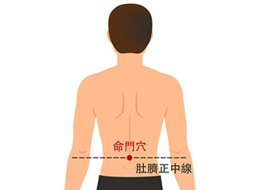
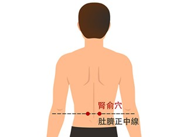
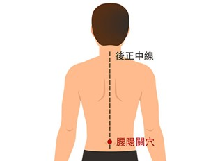
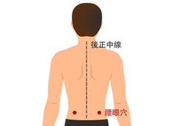
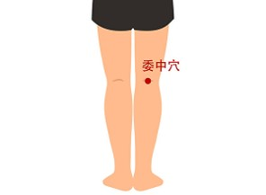

1. 最重要的是保持好姿勢 - 抬頭體胸縮下巴，坐下時最好要有靠背。
2. 切勿久坐久站，每個小時都要起來上廁所動一動。
3. 不要搬重物，若需要請注意搬東西的姿勢。
4. 核心運動 - 核心運動可以訓練腹、背的肌肉去保護脊椎。
5. 若以確定傷到腰部的話，可採用護腰、背架有助於穩定脊椎，能讓病人繼續工作。
6. 物理復健治療：包括牽引、伸展、經皮電刺激及針灸、肌能系貼布、熱敷等可緩解疼痛。
7. 可以按壓以下穴位
在脊柱上，肚臍的正後方，按壓有凹陷處。
按摩時，手握拳，以拳尖置於命門穴上，先順時針壓揉9次，再逆時針壓揉9次，重複壓揉36次。堅持按揉，可起到溫腎陽、利腰脊的作用。
命門穴旁邊1.5寸（二橫指）處，左右各有一個穴位。
腎俞穴為足太陽膀胱經穴道。按摩時，雙手握拳，將拳尖放在兩側腎俞穴上，順時針壓揉9次，再逆時針壓揉9次，重複壓揉36次。每天堅持按揉此穴，具有滋陰壯陽、補腎健腰的作用。
後正中線第四腰椎（十六椎）棘突下凹陷處，約與髂嵴相平。
手握拳，將拳尖放在腰陽關穴上，順時針壓揉9次，再逆時針壓揉9次，重複壓揉36次，每天按揉，可起到疏通陽氣、強腰膝、益下元的作用。
在腰陽關穴水平兩側，約3.5寸（四橫指多一點）的凹陷中，左右各有一個穴位。
按摩時，雙手握拳，用拳尖按揉此穴，順時針壓揉9次，再逆時針壓揉9次，重複壓揉36次，每天按揉，可起到活血通絡、健腰益腎的作用。
膝關節後面膕窩橫紋正中點處，即膝彎中央。
以雙手同時拿揉左右兩側的委中穴，用大拇指與其餘四指的指腹相對施力，約按摩一分鐘，可舒筋活絡、解痙止痛。